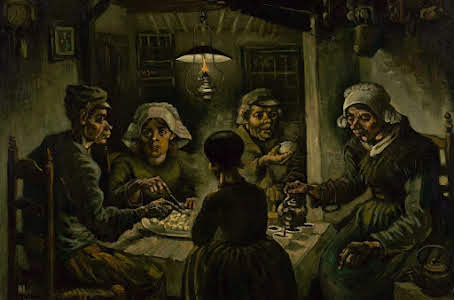

Obra Prima
Em março de 1885 seu pai morre repentinamente. Em abril do mesmo ano, Van Gogh pinta Os Comedores de Batata,
caracterizado pelas tonalidades escuras. Sobre essa tela o artista disse: "Poderíamos dizer que se trata de uma verdadeira pintura de camponeses. Eu sei que é".

Últimos anos
Em 1888, Van Gogh encontra-se com a saúde precária e segue os conselhos de Toulouse-Lautrec, vai para o campo e, em fevereiro, está em Arles, pintando ao ar livre.
Na época, Van Gogh pinta suas obras mais importantes - foram mais de 100 quadros, entre eles: Vista de Arles com Lírios (1888), Girassóis (1888), em que o amarelo é valorizado através das modulações de luz, e Quarto em Arles (1888).